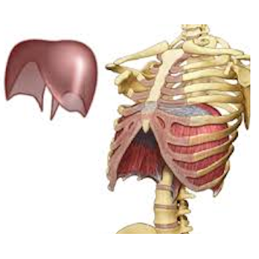
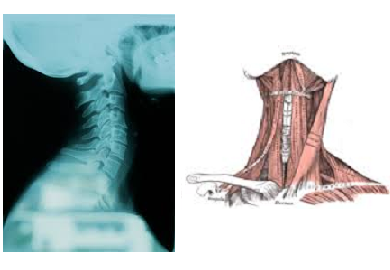
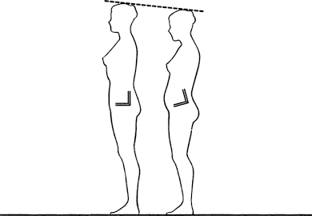

Cours individuels destinés aux amateurs du chant qui aimeraient apprendre à utiliser leur voix pour améliorer leur état de santé physique et psychologique.
Cours personnalisés
Par Eva, pédagogue du chant expérimentée, directrice de chorales et chanteuse professionnelle.
La voix est un instrument de musique à part entière. Elle réside intégralement dans notre corps qui lui-même devient un instrument de musique. Notre propre et unique instrument!
Le chant – exercé correctement - a des vertus thérapeutiques, tant psychologiques que physiques.
Le chant thérapeutique est pour vous si...
Vous voulez être capable de vous exprimer librement par:
la chanson
l’apprentissage à utiliser votre voix correctement
le progrès musical
Vous voulez améliorer votre santé physique par:
la pratique de la respiration diaphragmatique
la purification du corps
l’alignement de votre posture
une plus grande souplesse physique
Vous voulez améliorer votre force mentale par:
le développement de confiance en vous
une meilleure gestion émotionnelle
le développement de votre volonté
l’expérimentation du moment présent
la détente et le rire
...ou tout simplement, vous aimez chanter et ça vous met de bonne humeur!
Description des cours
Niveaux : Débutant, Avancé, Artiste confirmé.
Les cours se déroulent soit en langue française, soit en anglais (ce qui, pour certains, est un excellent moyen d’apprendre ou pratiquer une langue étrangère tout en chantant!)
Déroulement du cours
Nous travaillons pieds nus et un habillement confortable est conseillé.
C’est important de commencer à travailler avec le corps bien détendu. Nous faisons des exercices de stretching destinés spécifiquement aux chanteurs, qui incluent les muscles de la nuque, du cou, des épaules, de la ceinture diaphragmatique, des hanches, des genoux et des pieds.
Le massage vocal est un excellent moyen pour détendre la musculature qui entoure les cordes vocales.Les éléments de la Technique Alexander pour aligner la posture sont souvent utilisés.
La respiration correcte est le premier facteur de notre travail. Vous allez apprendre des techniques de respiration faciles et efficaces pour renforcer votre diaphragme et toute votre musculature vocale. Au quotidien, nous utilisons seulement environ 30% de nos poumons. Il est prouvé que les poumons des chanteurs ont une beaucoup plus grande capacité que les personnes qui ne chantent pas ou ne pratiquent pas d’autres activités à cet effet (sophrologie, yoga, certaines disciplines sportives).
Le travail de la respiration (renforcement diaphragmatique)

Le diaphragme joue le rôle principale dans la création de la voix parce qu’il contrôle la quantité d’air qui passe par les cordes vocales. D’habitude il y a trop d’air qui passe par le larynx, or pour créer une voix libre et sonore il en faut seulement un petit filet d’air bien soutenu par la contraction du diaphragme.
Dans notre quotidien, souvent rempli de stress et de distractions, nous ne nous rendons pas compte que nous développons de nombreuses tensions dans notre corps. Les régions qui accumulent le plus facilement les raideurs sont la nuque, le cou et les épaules. A force de ne pas utiliser correctement notre souffle ni nos muscles abdominaux, on raccourcit les muscles de la région cervicale qui sont souvent très douloureux. C’est justement là où se trouvent les cordes vocales qui doivent vibrer librement pour créer des sons optimaux et purs. Malheureusement, entourés de ces nombreuses tensions, leur fonctionnement est bien limité.
Heureusement, en travaillant l’alignement de la posture accompagné par la respiration diaphragmatique, on peut drastiquement limiter ces tensions et faire de la place pour une belle voix.

Les cordes vocales se trouvent au milieu de la région la plus sensible à l’accumulation de tensions musculaires.

Grace à l’alignement de la posture, on peut gagner quelques centimètres de hauteur.
On chauffe la voix en répétant des vocalises qui sont soigneusement choisies par rapport à la progression de leur intensité. Elles ont pour but de renforcer les cordes vocales, le diaphragme et toute la musculature vocale, d’élargir la cage thoracique et d’étendre la tessiture vocale.
Dès que la voix est chaude, on apprend à mettre en pratique par le chant toutes les techniques vocales qu’on a exercées pendant la phase d’échauffement. Pour parvenir à bien interpréter les répertoires du jazz, de la musique populaire, de la chanson française ou de la comédie musicale, on passe d’habitude par l’apprentissage et le développement d’un répertoire classique de base.
Cette phase devient de plus en plus longue en parallèle avec le progrès des cours et du travail individuel entre les cours. Bien évidemment, plus on consacre d’énergie, de temps et de motivation à l’entrainement, plus rapide sera le progrès et le plaisir de s’exprimer librement par le chant.
Info pratique
Les cours se déroulent à Monthey 1870, Chemin des Semilles 23. L’interphone 09*, 4ème étage.
Prix
Le premier cours est gratuit et sans engagement.
Au cas de la décision mutuelle pour commencer la formation, les tarifs sont:
CHF 90 pour un cours individuel de 60 minutes,
CHF 45 pour un cours individuel de 30 minutes.
Selon les disponibilités horaires, il est conseillé de suivre les cours avec la régularité hebdomadaire pour obtenir le progrès optimale.
Il est conseillé d’audio-enregistrer les cours pour pouvoir facilement recréer les exercices et les répéter au plus souvent possible pendant votre entrainement entre les deux cours. D’habitude, vos smartphones ont cette fonction.
Les différentes phases du cours changent leur longueur durant la formation:
Au début, on se concentre sur les phases de stretching et le massage vocal, exercices de respiration, alignement de posture et pose de voix par vocalises et utilisation de techniques vocales (Voir description des cours). En parallèle avec le progrès de cours et du travail individuel entre les cours, la phase apprentissage et pratique du répertoire devient de plus en plus longue. Bien évidemment, plus on consacre d’énergie, de temps et de motivation à l’entrainement, plus rapide sera le progrès et le plaisir de s’exprimer librement par le chant.